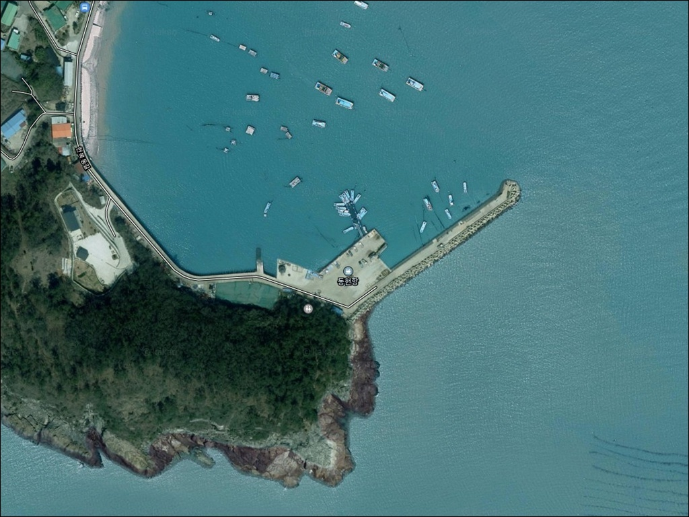
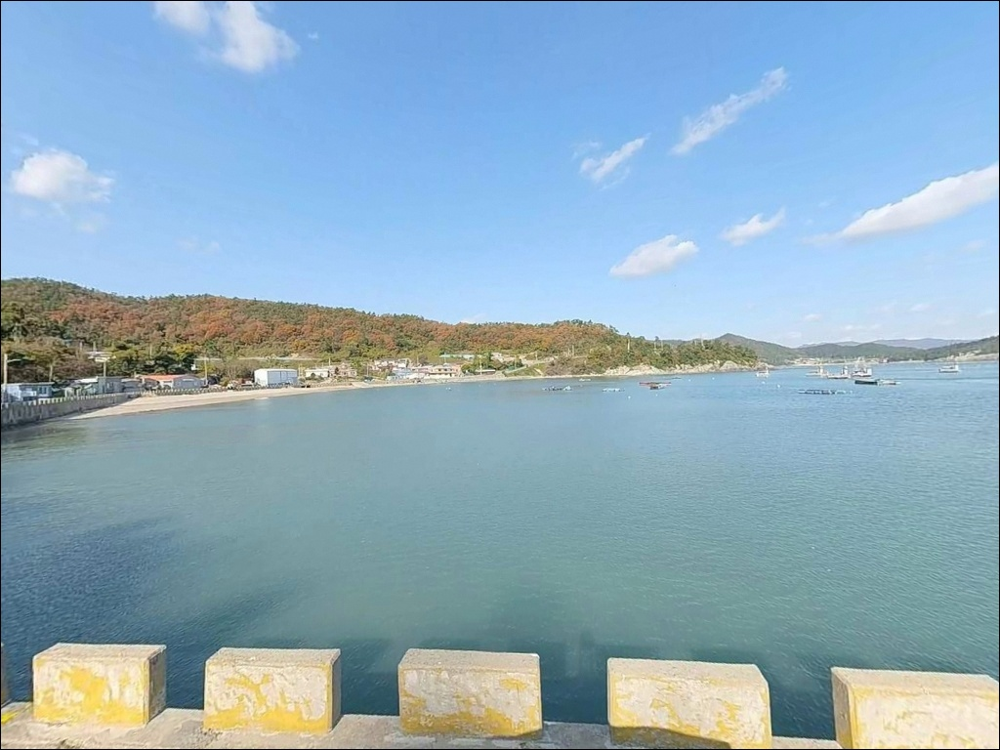
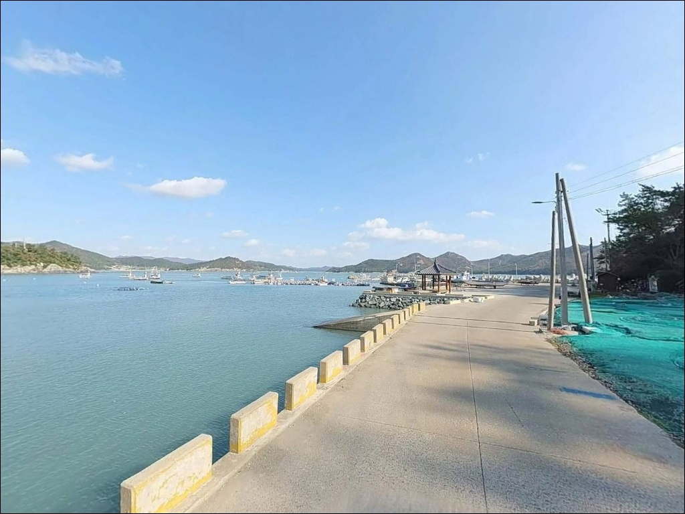
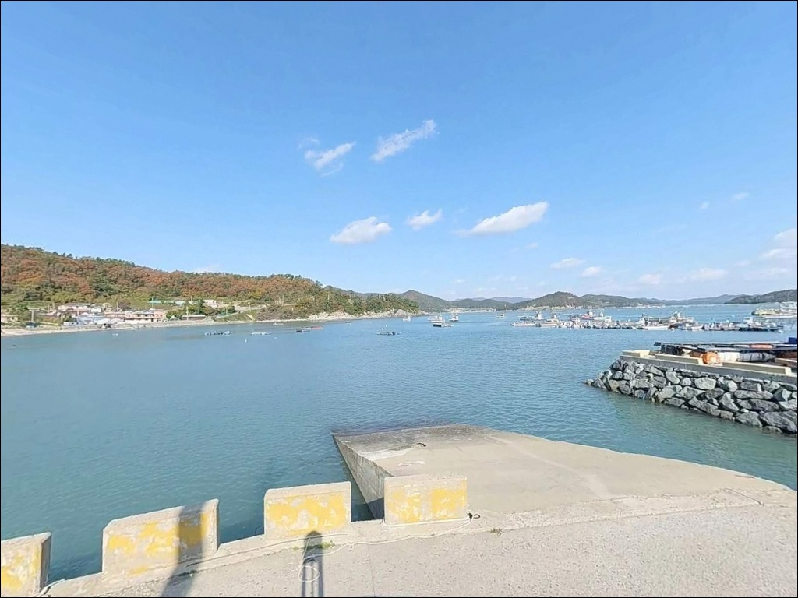
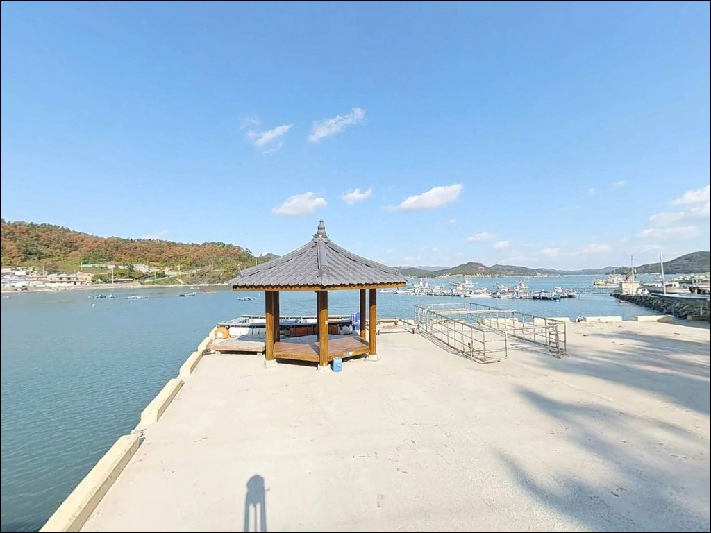
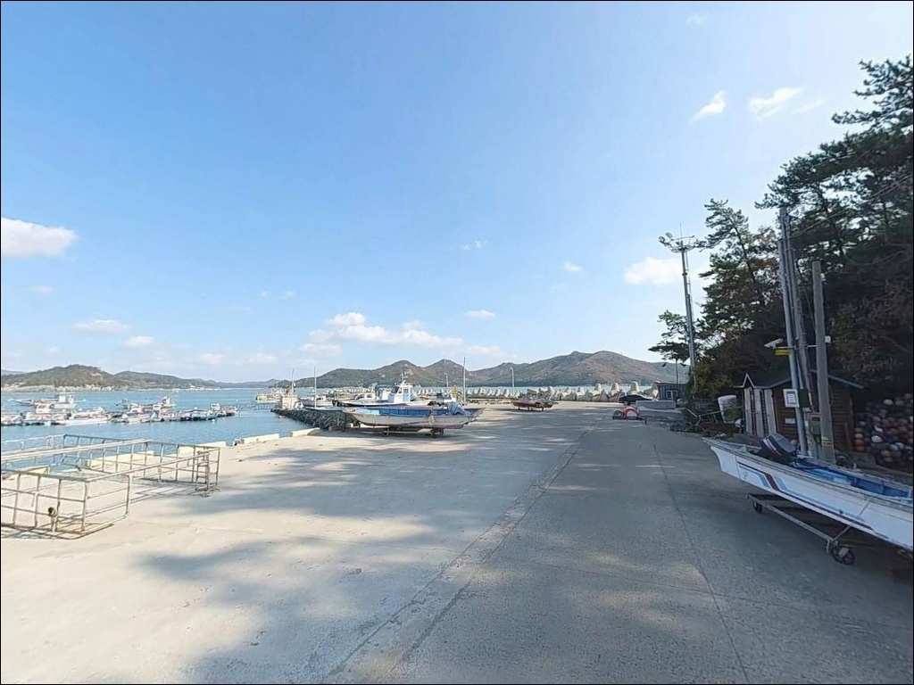
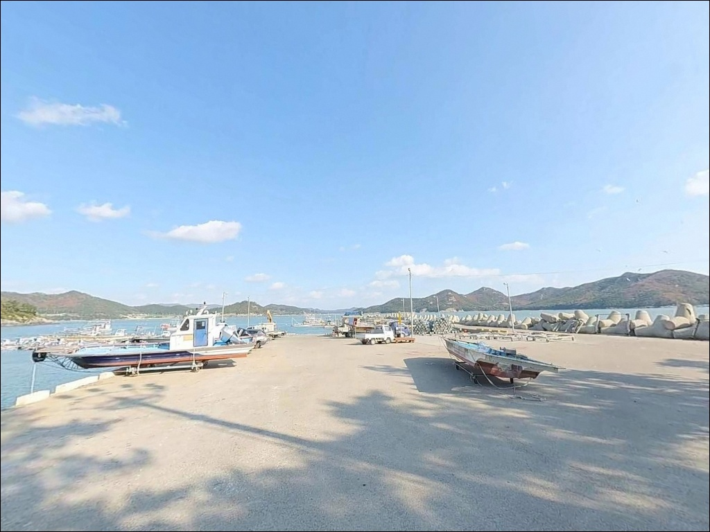
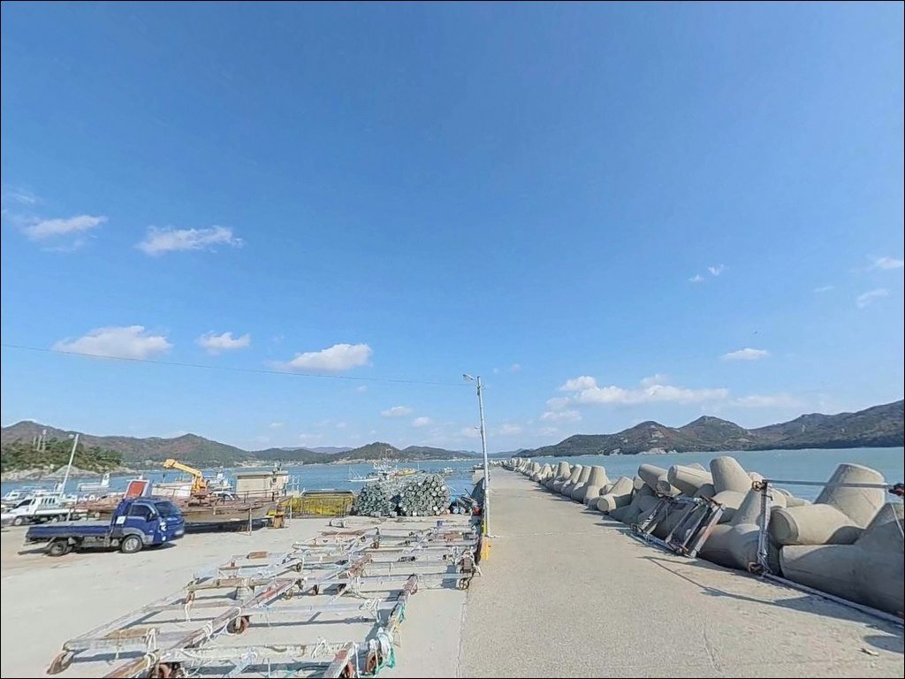
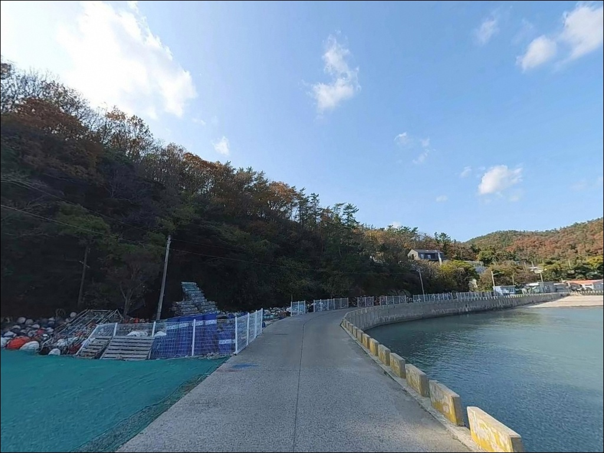

동헌항, 진도 전남 진도군 잔잔한 물결과 어울리는 차박, 낚시 한적한 포인트
이 페이지에는 광고(제휴 링크 포함)가 있으며, 광고 링크를 통해 구매하면 운영자가 판매 수익 또는 수수료를 받을 수 있습니다. 포인트 사진: 카카오맵 스카이뷰·로드뷰. 이 페이지의 지도·사진 이미지는 카카오맵의 실제 서비스 이미지와 다를 수 있습니다.


포인트 안내
동헌항
전남 진도군 임회면 죽림리 436-16
갯벌이 발달한 내만형 포구에서
간조 타이밍을 놓치면
방파제 안쪽 낚시 자리가 갯벌로 바뀝니다.
동헌항은 죽림리 앞바다 갯벌이
간조 시 넓게 드러나는 구조로,
바다타임 물때 확인이 출조 성패를 결정하는
포인트입니다.
전남 진도군 임회면 죽림리,
대학봉과 봉호산이 마을을 둘러싼
남향 바닷가에 자리한 동헌항은
죽림어촌체험마을과 같은 권역을 이루는
소규모 어촌정주어항입니다.
낚시 커뮤니티 기록이 많지 않은
조용한 현지형 포인트로,
지형 조건을 기반으로 한 전략이 먼저입니다.
이 글은
동헌항의 진입 환경, 차박 여건,
물때 판단 기준, 지형 기반 낚시 여건에 집중합니다.
조황 단정이나 특정 어종 보장은
이 글의 범위에 포함되지 않습니다.

1. 포인트 위치 및 진입 동선 분석
동헌항까지는 진도읍을 거쳐
임회면 방향 18번 국도에서 분기한
마을 진입로를 타고 들어가는 동선이 기본입니다.
죽림어촌체험마을이 단체 관광·체험객을 받는
구조로 운영되고 있어,
죽림리까지 연결되는 도로는
포장 상태의 농어촌 마을도로 수준입니다.
다만 마을 안으로 들어서는 마지막 구간은
도로 폭이 좁아질 수 있습니다.
디지털진도문화대전 자료에서도
동헌리 진입로를 소형차로로 표기하고 있어,
승용차·SUV 기준 진입은 무난한 편이지만
대형 캠핑카나 견인 트레일러는
출발 전 진입로와 회차 공간을 위성지도로 확인하고
가는 편이 안전합니다.
주차는 방파제 입구 주변 공터나
죽림어촌체험마을 인근 주차 공간을
활용하는 방식이 현실적입니다.
어선 진출입로와 작업 공간을 막지 않는 자리가
우선이며, 방파제 초입 선착장 앞
직접 주차는 피하는 편이 좋습니다.

2. 차박이 가능한 조건과 야간 체류 여건
동헌항은 죽림어촌체험마을과 같은 권역 안에 있어
야간에도 주변이 완전한 암흑 환경은 아닙니다.
기본적인 가로등이 설치되어 있을 가능성이 있으나,
낚시 포인트 전용 조명은 기대하기 어렵습니다.
개인 헤드랜턴과 조명 장비는 필수입니다.
죽림·강계·동헌 3개 마을이 하나의 체험 권역을 이루고 있어
낮 시간에는 체험객과 주민 활동이 비교적 활발한 편입니다.
체험 프로그램이 종료되는 야간에는
한결 조용해지지만, 민가와 포구가 밀착된 구조이므로
소음·조명·화로 사용에 특히 주의가 필요합니다.
장박보다는 1박 수준의 조용한 차박이
이 포인트에 맞는 현실적인 선택입니다.
동헌리 해변에는 청송 방풍림이 조성되어 있다는 기록이 있어
바람 완충 기능이 일부 기대되는 편입니다.
다만 남쪽이 남해 방향으로 열려 있는 입지 특성상
남서·남동풍 계열 바람이 강한 날에는
현장 바람 방향 확인 후 주차 자리를 선정하는 것이 좋습니다.


3. 주변 편의시설 및 인프라 현황
동헌항 바로 인근에는
죽림어촌체험마을이 운영하는
특산물 판매장·숙박동·세미나 공간이 갖춰져 있습니다.
가족 단위 방문객을 위한 편의 시설이
체험마을 중심으로 집중되어 있는 구조입니다.
공중화장실은 인근 헌복동1 화장실
(진도군 임회면 죽림리 432-12)이
상시 개방으로 운영됩니다.
진도군 임회면사무소가 설치·관리하는
수세식 공중화장실로,
야간 낚시·차박 시 24시간 이용할 수 있는 점이
이 포인트의 실질적인 강점 중 하나입니다.
편의점은 임회면 십일시길 32에
미니스톱 진도임회점이 위치합니다.
동헌항에서 차량으로 이동이 필요한 거리이므로
식수·얼음·간단한 낚시 소품은
출발 전 완전 자급으로 준비하는 편이 효율적입니다.
현장 조달을 기대하기 어려운 구조입니다.

4. 진입 전 반드시 챙겨야 할 준비사항
동헌항 방문 전 가장 먼저 확인할 것은 물때입니다.
갯벌이 넓게 발달한 내만형 지형이라
간조 시에는 방파제 안쪽 수심이 크게 낮아지고
갯벌이 드러나는 구간이 생깁니다.
바다타임에서 죽림리·임회면 기준 물때를 확인하고
들물 초입~중날물 타이밍을 기준으로
출발 시각을 맞추는 것이 기본 전략입니다.
원투낚시 위주라면 여분 채비를 넉넉히 준비하는 편이 좋습니다.
내만형 포구 특성상 바닥이 펄과 모래가 혼합된
여밭 구간이 있어 채비 손실이 발생하는 편입니다.
방파제 끝단에서 외항 방향으로 던지는 원투 채비라면
봉돌 20~30호 기준으로 여유분을 2배 이상
챙겨두는 것이 현명합니다.
마을 포구 특성상 어선 조업 시간이 이른 아침부터
시작되는 경우가 많습니다.
이른 아침 어선 이동 동선을 막지 않도록
주차 위치를 잡고,
어업 장비·그물에 낚싯줄이 걸리지 않도록
자리 선정 전 방파제 주변 어구 위치를 먼저 확인하는 것이 기본 매너입니다.

5. 지형 기반 낚시 여건 분석
동헌항이 위치한 죽림권역은
죽림·강계·동헌 세 마을의 앞바다에
넓은 갯벌이 발달한 것으로 알려져 있습니다.
조개잡기 체험이 운영될 정도로 완만한 경사와
펄·모래 혼합 갯벌이 넓게 분포하는 구조입니다.
이 특성상 간조 시에는 포구 안쪽 수심이
크게 낮아지는 전형적인 내만형 지형입니다.
방파제 끝단 외항 쪽으로 갈수록
수심이 상대적으로 깊어지는 경향이 있습니다.
진도 남동부 인근 방파제들의 일반적인 패턴을 보면
외항 끝단 기준 수심 5m 내외까지
완만하게 깊어지는 구조가 흔하며,
동헌항도 비슷한 흐름을 보일 가능성이 있습니다.
핵심 공략 자리는 방파제 끝단과
항 입구 쪽 조류가 살아있는 구간입니다.
진도 해역은 조류 흐름이 강한 지역으로
물때에 따라 조류 세기가 크게 달라집니다.
사리 전후에는 어떤 채비도
흐름을 버티기 어려운 상황이 생길 수 있습니다.
조금 전후 또는 들물 초입 타이밍에
방파제 끝단 외항 방향으로 채비를 보내는 방식이
이 포인트 구조에 맞습니다.
출조 전 최신 조황은 꼭 검색해 보시기 바랍니다.


6. 포인트에 어울리는 낚시 스타일
원투낚시는 이 포인트에서 가장 부담 없이
시작할 수 있는 스타일입니다.
방파제 끝단 외항 방향으로 채비를 멀리 보내
바닥층 어종을 기다리는 방식으로,
펄·모래 혼합 저질 특성상
붕장어·노래미·우럭 계열을
기대해 볼 수 있는 구조입니다.
여름 야간에 원투 채비를 놓고 기다리는 방식이
이 지형 조건과 잘 어울립니다.
찌낚시는 방파제 끝 외항 쪽에서
조류가 흐르는 라인을 노리는 방식이 적합합니다.
진도 남해안 해역에서
봄과 가을에 감성돔 활성이 높아지는 패턴이
인근 포인트들에서 공통적으로 확인되며,
초들물~중날물 타이밍에 집중하는 것이
이 해역의 일반적인 접근 방식입니다.
라이트 루어도 시도해 볼 만한 스타일입니다.
간조 전후 갯벌 가장자리의 수로·홈통 구간에서
지그헤드·웜 채비로 바닥층을 천천히 탐색하면
광어·노래미·숭어 계열을 만날 수 있는
지형 조건이 갖춰져 있습니다.
야간 방파제 주변 조류 소통 구간은
소형 루어로 농어 계열을 노리기에도
어울리는 구조입니다.

7. 대안 포인트와 플랜 B 동선
동헌항 여건이 여의치 않거나
물때가 맞지 않는 상황이라면
인근 초평항 방파제가 첫 번째 대안입니다.
진도 남동부 지역 낚시인들에게 알려진 포인트로
꺾인 방파제·일자 방파제·선착장 등
다양한 구조물이 있어 공략 지점이 많은 편이며,
방파제 끝단으로 갈수록 수심이 깊어지는 구조입니다.
같은 임회면 해안선에 위치한
서망항도 대안 포인트로 활용할 수 있습니다.
방파제 길이 730m 규모로
동헌항보다 포인트 다양성이 넓은 편입니다.
조황 기록이 쌓여 있는 포인트이므로
출조 전 서망항 조황 검색을 통해
어황 분위기를 파악하는 것도
이 권역 전략으로 유효합니다.
개방적인 해변 분위기를 원하거나
차박 공간을 더 여유롭게 확보하고 싶다면
진도군 의신면에 위치한
금갑해변을 플랜 B로 고려할 수 있습니다.
주차장이 갖춰진 해수욕장 구조로
차박 공간 확보가 상대적으로 수월하며,
인근 해역에서 바다낚시를 겸하는
여행 동선에도 어울리는 대안입니다.

물때를 맞추면
동헌항이 달리 보입니다
원투낚시와 찌낚시를 즐기는 낚시인이라면
동헌항의 내만형 지형 조건은
충분히 접근해 볼 만한 구조입니다.
방파제 끝단 외항 경계와
갯벌 가장자리 수로 구간은
조류가 살아있는 타이밍에 제 역할을 합니다.
아직 낚시 기록이 많지 않은 포인트인 만큼
직접 답사 가치가 있는 조용한 현지형 스팟입니다.
반면 물때 계산 없이 간조 타이밍에 진입하거나,
대형 차량으로 사전 확인 없이 마을 안길로 들어서면
현장에서 난처한 상황을 만날 수 있습니다.
물때 확인, 진입로 사전 점검, 자급 준비
이 세 가지를 갖추고 간다면
조용한 포구에서 낚시와 차박을 함께 즐기는
기억에 남는 출조가 될 수 있는 곳입니다.
죽림어촌체험마을 인근의 공중화장실과
청송 방풍림이 만들어주는 조용한 해변 분위기는
낚시 후 차 안에서 하룻밤을 보내기에
나쁘지 않은 조건입니다.
민가 소음 매너만 지킨다면
진도 남해안에서 아직 덜 알려진
실용적인 낚시 차박 포인트로
충분히 활용할 수 있습니다.